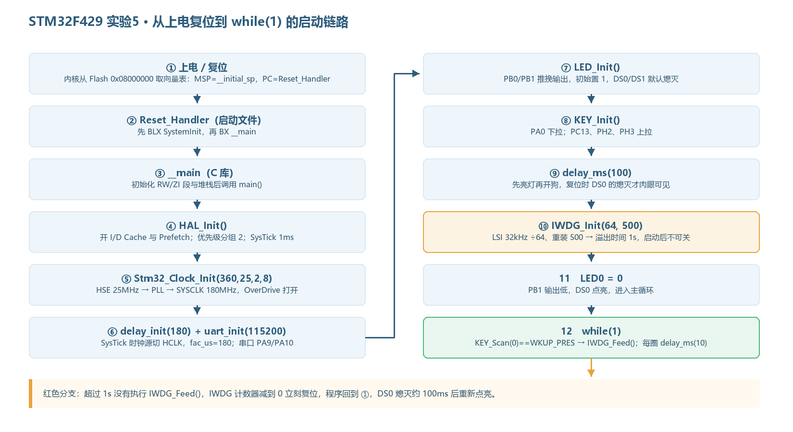
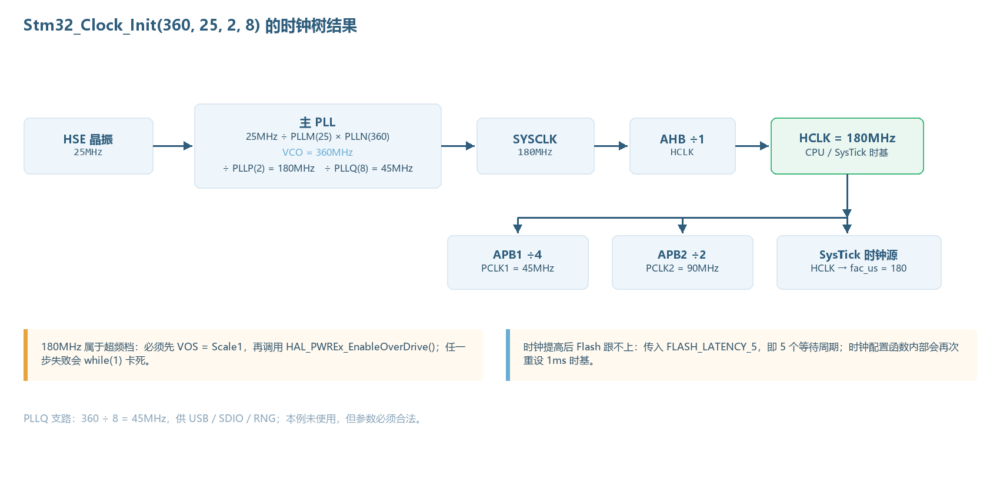
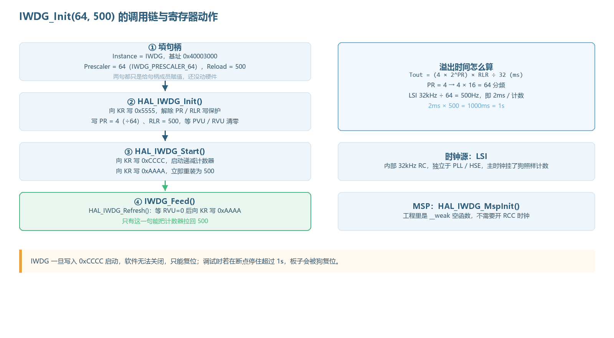
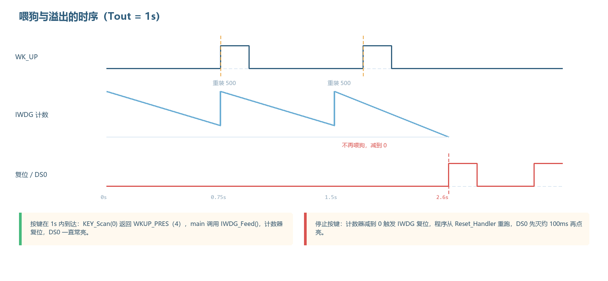

01 工程概述与硬件资源
工程是正点原子阿波罗 STM32F429 开发板的 HAL 库标准例程第 5 个：独立看门狗（IWDG）。程序启动后点亮 DS0，主循环不停扫描 WK_UP 按键；一旦超过 1s 没有按下按键喂狗，IWDG 就复位芯片，DS0 熄灭约 100ms 后重新点亮，形成肉眼可见的“闪烁一次”。
| 资源 | 连接 | 在启动流程中的作用 |
|---|---|---|
| DS0 | PB1，低电平点亮 | 用“亮 → 灭一下 → 再亮”显示是否发生过看门狗复位 |
| DS1 | PB0，低电平点亮 | LED_Init 一起初始化，本实验不使用 |
| WK_UP | PA0，内部下拉，按下为高 | 唯一的喂狗入口，KEY_Scan 返回 4 |
| KEY0 / KEY1 / KEY2 | PH3 / PH2 / PC13，上拉 | 本实验不参与逻辑，但按键扫描优先级更高 |
| USART1 | PA9 / PA10，115200-8-N-1 | printf 重定向，可用于打印调试信息 |
| IWDG | 片内，LSI 32kHz | 被配置为 1s 溢出，启动后软件无法关闭 |
while(1) 里喂狗为止；HAL 库内部实现只保留与启动有关的调用。02 工程目录与文件分工
| 目录 / 文件 | 负责什么 | 本页关注点 |
|---|---|---|
CORE/startup_stm32f429xx.s | 堆栈定义、向量表、Reset_Handler | 启动的第一步：取 MSP 与 PC |
USER/system_stm32f4xx.c | SystemInit：FPU、VTOR、RCC 复位 | Reset_Handler 调用的第一个 C 函数 |
USER/main.c | 整条初始化链与主循环 | 启动顺序的唯一“剧本” |
USER/stm32f4xx_it.c | 异常与 SysTick 中断 | SysTick_Handler → HAL_IncTick |
SYSTEM/sys/sys.c | Stm32_Clock_Init、位带宏 | 把 SYSCLK 拉到 180MHz |
SYSTEM/delay/delay.c | delay_init / delay_us / delay_ms | 用 SysTick 做前后台延时 |
SYSTEM/usart/usart.c | uart_init、MSP、fputc 重定向 | 串口引脚与中断优先级 |
HARDWARE/LED/led.c | PB0/PB1 推挽输出 | DS0 默认熄灭，LED0=0 才亮 |
HARDWARE/KEY/key.c | 四个按键初始化与扫描 | WK_UP 的读取与消抖 |
HARDWARE/IWDG/iwdg.c | IWDG_Init / IWDG_Feed | 本实验的主角 |
HARDWARE/EXTI/exti.c | 外部中断例程 | 参编但 main 未调用，属于遗留文件 |
HALLIB/ | ST 官方 HAL 驱动 | 只跟 HAL_Init、RCC、UART、IWDG 打交道 |
Keil 工程 USER/IWDG.uvprojx 的器件是 STM32F429IGTx，IROM 起始 0x08000000、大小 0x100000（1MB），IRAM1 为 0x20000000 / 0x30000（192KB），另有一块 0x10000000 的 CCM 区。
exti.c，但 main.c 从未调用 EXTI_Init()；读启动流程时不要把它算进主链路。03 启动流程总览

main.c 全文（37 行）
int main(void)
{
HAL_Init(); //初始化HAL库
Stm32_Clock_Init(360,25,2,8); //设置时钟,180Mhz
delay_init(180); //初始化延时函数
uart_init(115200); //初始化USART
LED_Init(); //初始化LED
KEY_Init(); //初始化按键
delay_ms(100); //延时100ms再初始化看门狗,LED0的变化"可见"
IWDG_Init(IWDG_PRESCALER_64,500); //分频数为64,重载值为500,溢出时间为1s
LED0=0;
while(1)
{
if(KEY_Scan(0)==WKUP_PRES) //如果WK_UP按下，喂狗
{
IWDG_Feed(); //喂狗
}
delay_ms(10);
}
}
为什么是这个顺序
- HAL_Init 必须最先：它建立 1ms 时基，后面的
delay_ms与 HAL 内部超时都依赖它。 - 时钟必须早于所有外设：串口波特率、SysTick 计数值都由 HCLK 推导，先配时钟再算分频。
- delay_init 早于 UART：串口初始化内部要用延时等待稳定。
- 看门狗最后开：IWDG 一旦启动就不能关，所以要等 GPIO、串口都初始化完，再把“1s 倒计时”交给它。
delay_ms(100) 在 LED0=0 之前执行：此时 DS0 还是灭的，等看门狗开完才点亮，因此复位瞬间的“熄灭”才看得见。04 启动文件与向量表
栈、堆与向量表
Stack_Size EQU 0x400; ; 栈 1KB AREA STACK, NOINIT, READWRITE, ALIGN=3 Stack_Mem SPACE Stack_Size __initial_sp Heap_Size EQU 0x200; ; 堆 512B AREA HEAP, NOINIT, READWRITE, ALIGN=3 __heap_base Heap_Mem SPACE Heap_Size __heap_limit AREA RESET, DATA, READONLY __Vectors DCD __initial_sp ; 第 1 项：栈顶地址 → MSP DCD Reset_Handler ; 第 2 项：复位入口 → PC DCD NMI_Handler DCD HardFault_Handler DCD MemManage_Handler DCD BusFault_Handler DCD UsageFault_Handler DCD 0 DCD 0 DCD 0 DCD 0 DCD SVC_Handler DCD DebugMon_Handler DCD 0 DCD PendSV_Handler DCD SysTick_Handler ; 之后是 82 个外设中断入口，全部为 [WEAK]
Reset_Handler 只做两件事
Reset_Handler PROC
EXPORT Reset_Handler [WEAK]
IMPORT SystemInit
IMPORT __main
LDR R0, =SystemInit
BLX R0 ; ① 先跑 SystemInit
LDR R0, =__main
BX R0 ; ② 再跳 C 库启动代码
ENDP
__main 是 ARM 编译器提供的 C 库入口，它负责把 .data 初值从 Flash 搬到 RAM、把 .bss 清零、初始化堆栈，最后才调用用户的 main()。所以 main 里可以直接使用已初始化的全局变量。
| 向量表项 | 本工程实现者 | 说明 |
|---|---|---|
| Reset | 启动文件 | 上电 / 复位后唯一必然执行的分支 |
| SysTick | stm32f4xx_it.c | 强符号覆盖启动文件里的 [WEAK] 死循环 |
| HardFault 等 | stm32f4xx_it.c | 全部是 while(1)，出异常会停在这里 |
| USART1 | usart.c | 本工程使能了接收中断 |
[WEAK] 且默认是 B . 死循环；只要你在 C 文件里写同名函数，链接器就会用你的版本。这也是不写 USART1_IRQHandler 程序不会报错、但中断来了会卡死的原因。05 SystemInit 与 HAL_Init
SystemInit：复位后的裸机现场清理
void SystemInit(void)
{
/* FPU settings */
#if (__FPU_PRESENT == 1) && (__FPU_USED == 1)
SCB->CPACR |= ((3UL << 10*2)|(3UL << 11*2)); /* CP10/CP11 全访问 */
#endif
RCC->CR |= (uint32_t)0x00000001; /* 打开 HSION */
RCC->CFGR = 0x00000000; /* 清空时钟配置 */
RCC->CR &= (uint32_t)0xFEF6FFFF; /* 关 HSEON/CSSON/PLLON */
RCC->PLLCFGR = 0x24003010;
RCC->CR &= (uint32_t)0xFFFBFFFF; /* 清 HSEBYP */
RCC->CIR = 0x00000000; /* 关所有中断 */
SCB->VTOR = FLASH_BASE | VECT_TAB_OFFSET; /* 向量表放 0x08000000 */
}
此时系统跑在内部 HSI 16MHz，SystemCoreClock 变量初值也是 16000000。真正把主频拉到 180MHz 的是后面 main 里的 Stm32_Clock_Init。
HAL_Init：给 HAL 库铺好时基
HAL_StatusTypeDef HAL_Init(void)
{
#if (INSTRUCTION_CACHE_ENABLE != 0)
__HAL_FLASH_INSTRUCTION_CACHE_ENABLE();
#endif
#if (DATA_CACHE_ENABLE != 0)
__HAL_FLASH_DATA_CACHE_ENABLE();
#endif
#if (PREFETCH_ENABLE != 0)
__HAL_FLASH_PREFETCH_BUFFER_ENABLE();
#endif
HAL_NVIC_SetPriorityGrouping(NVIC_PRIORITYGROUP_2); //中断优先级分组2
HAL_InitTick(TICK_INT_PRIORITY); //SysTick 1ms
HAL_MspInit();
return HAL_OK;
}
| 动作 | 本工程取值 | 影响 |
|---|---|---|
| 指令 / 数据 Cache、Prefetch | 三项均使能 | Flash 取指加速，180MHz 下必须有 |
| 优先级分组 | NVIC_PRIORITYGROUP_2 | 2 位抢占（0~3）+ 2 位子优先级（0~3） |
| SysTick 时基 | TICK_INT_PRIORITY = 0x0F，1ms | SysTick 优先级最低，HAL_Delay 依赖它 |
| HAL_MspInit | 工程未重写，走 __weak 空函数 | 所以这里不会额外开任何外设时钟 |
SYSTEM_SUPPORT_OS 在 sys.h 里定义为 0，因此 delay.c 走的是“无 OS”分支，SysTick 只负责 HAL_IncTick，不做任务调度。06 系统时钟配置 180MHz

__HAL_RCC_PWR_CLK_ENABLE(); //使能PWR时钟 __HAL_PWR_VOLTAGESCALING_CONFIG(PWR_REGULATOR_VOLTAGE_SCALE1); RCC_OscInitStructure.OscillatorType = RCC_OSCILLATORTYPE_HSE; RCC_OscInitStructure.HSEState = RCC_HSE_ON; RCC_OscInitStructure.PLL.PLLState = RCC_PLL_ON; RCC_OscInitStructure.PLL.PLLSource = RCC_PLLSOURCE_HSE; RCC_OscInitStructure.PLL.PLLM = pllm; //25 RCC_OscInitStructure.PLL.PLLN = plln; //360 RCC_OscInitStructure.PLL.PLLP = pllp; //2 RCC_OscInitStructure.PLL.PLLQ = pllq; //8 ret = HAL_RCC_OscConfig(&RCC_OscInitStructure); if(ret != HAL_OK) while(1); ret = HAL_PWREx_EnableOverDrive(); //开启 Over-Driver if(ret != HAL_OK) while(1); RCC_ClkInitStructure.SYSCLKSource = RCC_SYSCLKSOURCE_PLLCLK; RCC_ClkInitStructure.AHBCLKDivider = RCC_SYSCLK_DIV1; RCC_ClkInitStructure.APB1CLKDivider = RCC_HCLK_DIV4; RCC_ClkInitStructure.APB2CLKDivider = RCC_HCLK_DIV2; ret = HAL_RCC_ClockConfig(&RCC_ClkInitStructure, FLASH_LATENCY_5);
| 节点 | 算式 | 结果 |
|---|---|---|
| PLL 输入 | HSE 25MHz ÷ PLLM(25) | 1MHz |
| VCO | 1MHz × PLLN(360) | 360MHz |
| SYSCLK | 360MHz ÷ PLLP(2) | 180MHz |
| USB / SDIO / RNG | 360MHz ÷ PLLQ(8) | 45MHz |
| HCLK | SYSCLK ÷ 1 | 180MHz |
| PCLK1（APB1） | 180MHz ÷ 4 | 45MHz |
| PCLK2（APB2） | 180MHz ÷ 2 | 90MHz |
| Flash 等待周期 | FLASH_LATENCY_5 | 5WS（6 个 CPU 周期） |
HSE 的值来自 stm32f4xx_hal_conf.h：#define HSE_VALUE ((uint32_t)25000000)；内部 RC 为 HSI_VALUE 16000000。三个 while(1) 是“配置失败就停住”的兜底，实际调试时如果晶振不起振，程序会安静地卡在这里。
HAL_RCC_ClockConfig() 末尾会再次调用 HAL_InitTick()，按新的 HCLK 重新计算 SysTick 重装值，所以 1ms 时基在改频后依然准确。07 延时与时基
void delay_init(u8 SYSCLK)
{
HAL_SYSTICK_CLKSourceConfig(SYSTICK_CLKSOURCE_HCLK); //SysTick频率为HCLK
fac_us = SYSCLK; //180 → 1us 需要 180 个计数
// SYSTEM_SUPPORT_OS = 0，下面这段不编译
}
void delay_us(u32 nus)
{
u32 ticks, told, tnow, tcnt = 0;
u32 reload = SysTick->LOAD;
ticks = nus * fac_us; //需要的节拍数
told = SysTick->VAL;
while(1)
{
tnow = SysTick->VAL;
if(tnow != told)
{
if(tnow < told) tcnt += told - tnow; //递减计数器
else tcnt += reload - tnow + told;
told = tnow;
if(tcnt >= ticks) break;
}
}
}
void delay_ms(u16 nms)
{
u32 i;
for(i = 0; i < nms; i++) delay_us(1000);
}
| 项目 | 取值 / 行为 |
|---|---|
| SysTick 时钟源 | HCLK（180MHz） |
| SysTick 重装值 | HAL_InitTick 设置：180000/1000 − 1 = 179999 |
fac_us | 180，即 1μs = 180 个 SysTick 计数 |
| delay_ms(100) 实际耗时 | 100 × 1000μs，约 100ms（阻塞，不进入低功耗） |
| 中断里的 tick | SysTick_Handler → HAL_IncTick() |
SysTick->VAL，不是 HAL 的毫秒计数。所以 delay_us 即使在中断里调用也不会因为 HAL 节拍没进而不准；缺点是完全阻塞 CPU。08 串口初始化
void uart_init(u32 bound)
{
UART1_Handler.Instance = USART1;
UART1_Handler.Init.BaudRate = bound;
UART1_Handler.Init.WordLength = UART_WORDLENGTH_8B;
UART1_Handler.Init.StopBits = UART_STOPBITS_1;
UART1_Handler.Init.Parity = UART_PARITY_NONE;
UART1_Handler.Init.HwFlowCtl = UART_HWCONTROL_NONE;
UART1_Handler.Init.Mode = UART_MODE_TX_RX;
HAL_UART_Init(&UART1_Handler); //内部会回调 HAL_UART_MspInit
HAL_UART_Receive_IT(&UART1_Handler, (u8 *)aRxBuffer, RXBUFFERSIZE);
}
void HAL_UART_MspInit(UART_HandleTypeDef *huart)
{
if(huart->Instance == USART1)
{
__HAL_RCC_GPIOA_CLK_ENABLE();
__HAL_RCC_USART1_CLK_ENABLE();
GPIO_Initure.Pin = GPIO_PIN_9; //PA9 TX
GPIO_Initure.Mode = GPIO_MODE_AF_PP;
GPIO_Initure.Alternate = GPIO_AF7_USART1;
HAL_GPIO_Init(GPIOA, &GPIO_Initure);
GPIO_Initure.Pin = GPIO_PIN_10; //PA10 RX
HAL_GPIO_Init(GPIOA, &GPIO_Initure);
HAL_NVIC_EnableIRQ(USART1_IRQn);
HAL_NVIC_SetPriority(USART1_IRQn, 3, 3); //抢占3，子优先级3
}
}
波特率之所以准，是因为前面已经把 PCLK2 配成 90MHz，HAL_UART_Init 用它反算 USARTDIV。fputc 被重定向到 USART1->DR，所以可以直接 printf：
int fputc(int ch, FILE *f)
{
while((USART1->SR & 0X40) == 0); //等 TXE 置位
USART1->DR = (u8) ch;
return ch;
}
09 LED 与按键初始化
void LED_Init(void)
{
GPIO_InitTypeDef GPIO_Initure;
__HAL_RCC_GPIOB_CLK_ENABLE();
GPIO_Initure.Pin = GPIO_PIN_0 | GPIO_PIN_1; //PB0/PB1
GPIO_Initure.Mode = GPIO_MODE_OUTPUT_PP; //推挽输出
GPIO_Initure.Pull = GPIO_PULLUP;
GPIO_Initure.Speed = GPIO_SPEED_HIGH;
HAL_GPIO_Init(GPIOB, &GPIO_Initure);
HAL_GPIO_WritePin(GPIOB, GPIO_PIN_0, GPIO_PIN_SET); //DS1 灭
HAL_GPIO_WritePin(GPIOB, GPIO_PIN_1, GPIO_PIN_SET); //DS0 灭
}
void KEY_Init(void)
{
__HAL_RCC_GPIOA_CLK_ENABLE();
__HAL_RCC_GPIOC_CLK_ENABLE();
__HAL_RCC_GPIOH_CLK_ENABLE();
GPIO_Initure.Pin = GPIO_PIN_0; //WK_UP → PA0
GPIO_Initure.Mode = GPIO_MODE_INPUT;
GPIO_Initure.Pull = GPIO_PULLDOWN; //下拉：按下为高
HAL_GPIO_Init(GPIOA, &GPIO_Initure);
GPIO_Initure.Pin = GPIO_PIN_13; //KEY2 → PC13
GPIO_Initure.Pull = GPIO_PULLUP;
HAL_GPIO_Init(GPIOC, &GPIO_Initure);
GPIO_Initure.Pin = GPIO_PIN_2 | GPIO_PIN_3; //KEY1/KEY0 → PH2/PH3，沿用上拉
HAL_GPIO_Init(GPIOH, &GPIO_Initure);
}
点灯用的是位带宏而不是 HAL 函数：#define LED0 PBout(1)，PBout(n) 通过 BITBAND 把 GPIOB_ODR 的第 1 位映射成独立地址，所以 LED0=0 等价于“只把 PB1 拉低”，不影响 PB0。
#define BITBAND(addr, bitnum) ((addr & 0xF0000000)+0x2000000+((addr &0xFFFFF)<<5)+(bitnum<<2)) #define MEM_ADDR(addr) *((volatile unsigned long *)(addr)) #define BIT_ADDR(addr, bitnum) MEM_ADDR(BITBAND(addr, bitnum)) #define PBout(n) BIT_ADDR(GPIOB_ODR_Addr, n)
| 按键 | 引脚 | 有效电平 | 返回值 |
|---|---|---|---|
| KEY0 | PH3 | 低 | 1 |
| KEY1 | PH2 | 低 | 2 |
| KEY2 | PC13 | 低 | 3 |
| WK_UP | PA0 | 高 | 4（WKUP_PRES） |
mode=0 时靠 static u8 key_up 做“松手才响应”；按下后固定 delay_ms(10) 消抖。10 独立看门狗初始化

IWDG_HandleTypeDef IWDG_Handler; //独立看门狗句柄 //prer:分频数 IWDG_PRESCALER_4~256；rlr:自动重装载值 0~0xFFF void IWDG_Init(u8 prer, u16 rlr) { IWDG_Handler.Instance = IWDG; IWDG_Handler.Init.Prescaler = prer; //IWDG_PRESCALER_64 = 0x4 IWDG_Handler.Init.Reload = rlr; //500 HAL_IWDG_Init(&IWDG_Handler); HAL_IWDG_Start(&IWDG_Handler); } void IWDG_Feed(void) { HAL_IWDG_Refresh(&IWDG_Handler); //喂狗 }
HAL 内部实际写了哪些寄存器
// HAL_IWDG_Init 中 IWDG_ENABLE_WRITE_ACCESS(hiwdg); //KR = 0x5555，允许改 PR/RLR MODIFY_REG(hiwdg->Instance->PR, IWDG_PR_PR, hiwdg->Init.Prescaler); //PR = 4 MODIFY_REG(hiwdg->Instance->RLR, IWDG_RLR_RL, hiwdg->Init.Reload); //RLR = 500 // HAL_IWDG_Start 中 __HAL_IWDG_START(hiwdg); //KR = 0xCCCC，启动 __HAL_IWDG_RELOAD_COUNTER(hiwdg); //KR = 0xAAAA，重装 // HAL_IWDG_Refresh 中 while(__HAL_IWDG_GET_FLAG(hiwdg, IWDG_FLAG_RVU) != RESET); //等重装完成 __HAL_IWDG_RELOAD_COUNTER(hiwdg); //KR = 0xAAAA，喂狗
| 参数 | 本工程值 | 含义 |
|---|---|---|
| PR | IWDG_PRESCALER_64（0x4） | LSI 32kHz ÷ 64 = 500Hz |
| RLR | 500 | 500 个计数 = 1s |
| 计数节拍 | 2ms / 计数 | 溢出时间 = 2ms × 500 = 1s |
| 时钟源 | LSI 32kHz | 独立 RC，不受 PLL / HSE 影响 |
| MSP 回调 | HAL_IWDG_MspInit 为弱空函数 | IWDG 无需 RCC 时钟使能 |
Tout = (4 × 2^PR) × RLR ÷ 32 (ms) 就是文件头注释里的公式：PR=4 → 4×16=64 分频，2ms×500=1000ms。LSI 本身有 ± 误差，实测溢出时间会略偏离 1s，属正常现象。11 主循环与喂狗时序

LED0 = 0; //DS0 点亮，作为“程序还活着”的指示 while(1) { if(KEY_Scan(0) == WKUP_PRES) //WK_UP 按下并返回 4 { IWDG_Feed(); //喂狗：KR = 0xAAAA } delay_ms(10); //每圈 10ms，主循环不是忙等 }
| 时间点 | 软件动作 | 硬件反应 |
|---|---|---|
| t = 0 | IWDG_Init 后计数器 = 500 | 开始以 2ms/计数递减 |
| 按下 WK_UP | KEY_Scan(0) 返回 4 → IWDG_Feed() | 计数器回到 500，重新计时 |
| 超过 1s 未喂 | 无软件动作 | 计数器减到 0 → 产生 IWDG 复位 |
| 复位后 | 从 Reset_Handler 重新执行 | DS0 熄灭约 100ms 后重新点亮 |
delay_ms(10) 决定按键的最短响应间隔：一圈 10ms，所以从按下到喂狗最多延迟 10ms，相对 1s 的窗口非常安全。
RCC->CSR 的 IWDGRSTF 位（复位后需写 RMVF 清除）。本工程没有读取，所以只能从“DS0 灭了一下”间接看出来。12 实验现象与验证
| 操作 | DS0（PB1） | 说明 |
|---|---|---|
| 上电，一直按住 WK_UP 并反复按 | 常亮 | 每 1s 内至少喂一次狗，永不溢出 |
| 上电后不按键 | 亮 → 灭约 100ms → 亮，循环 | 每 1s 溢出复位一次，形成间歇熄灭 |
| 快速连按后松手 | 保持亮，松手 1s 后开始闪 | 最后一次喂狗时刻决定复位起点 |
现象的可观察性来自 main 里这三句的先后关系：delay_ms(100) → IWDG_Init(...) → LED0=0。复位后程序重新执行这段，DS0 会先保持熄灭 100ms，再被拉低点亮，于是肉眼看到“灭一下”。
LED0=0 挪到 IWDG_Init 之前，复位瞬间灯只是重新点亮，几乎没有可见变化，实验现象会变得不明显。13 喂狗状态交互演示
演示规则与源码一致：喂狗后 1s 内必须再喂一次；停止喂狗满 1s，计数器减到 0，DS0 先熄灭再重新点亮，等价于一次复位。
14 总结与常见问题
一条线：上电取向量表（MSP + Reset_Handler）→ SystemInit（FPU、VTOR、RCC 复位）→ __main（RW/ZI、堆栈）→ main → HAL_Init（Cache、分组 2、1ms 时基）→ Stm32_Clock_Init（180MHz、OverDrive、5WS）→ delay_init（fac_us=180）→ uart_init（PA9/PA10、115200）→ LED_Init / KEY_Init → delay_ms(100) → IWDG_Init(64,500) → LED0=0 → while(1) 按键喂狗。
| 现象 | 可能原因 | 排查点 |
|---|---|---|
| DS0 始终不亮 | 没执行到 LED0=0 | 看是否卡在时钟配置的 while(1)；测 PB1 电平 |
| 程序反复重启 | 1s 内未喂狗，属正常现象 | 确认 KEY_Scan(0) 返回 4、PA0 按下为高 |
| 按键无反应 | PA0 未下拉或按键接触不良 | 万用表测 PA0：松手 0V、按下约 3.3V |
| 串口无输出 | fputc 未重定向 / 引脚没复用 | 确认 PA9 为 AF7、波特率 115200 |
| 串口乱码 | HSE 未起振导致 PLL 失败 | 检查 25MHz 晶振与 HSE_VALUE 定义 |
| 一进断点就复位 | IWDG 已启动，暂停超过 1s | 调试时先注释 HAL_IWDG_Start，或缩短停顿时长 |
| 实测不是正好 1s | LSI 32kHz 有偏差 | 按公式核算后属正常，需要精确就用窗口看门狗 + LSE |